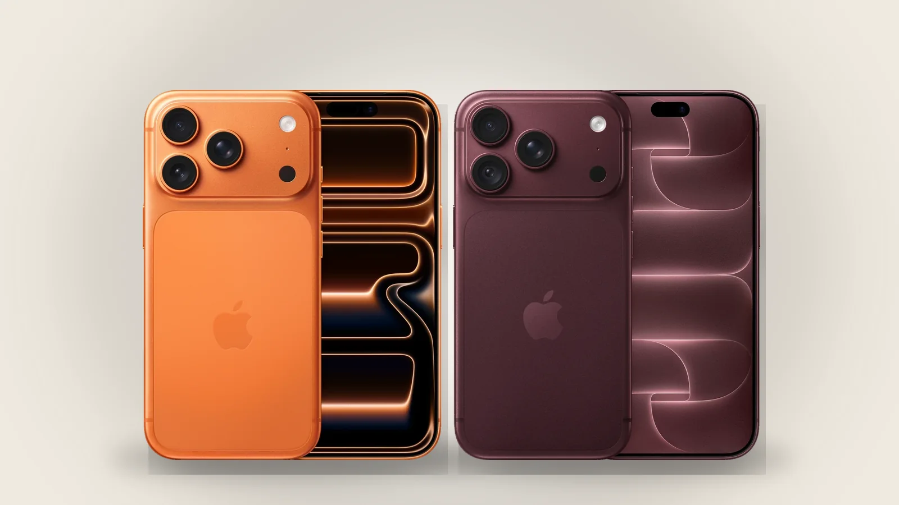
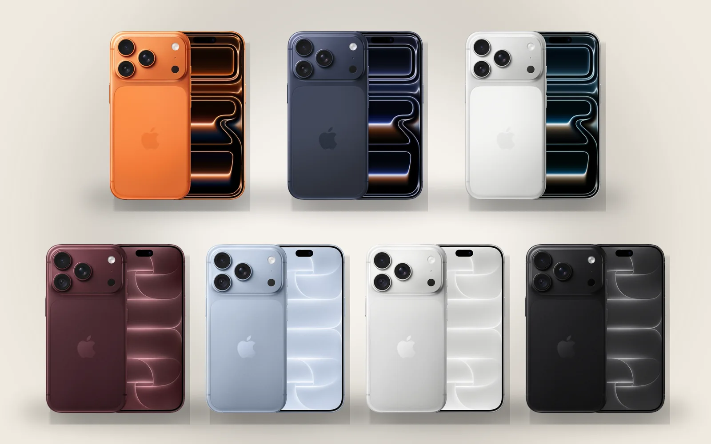

iPhone 17 Pro or iPhone 18 Pro: what actually changed
From the outside they are almost the same phone. The differences are inside, and in the price.

Design
The same size and shape; the 18 Pro is a few grams heavier (about 211 g against 206 g). The colours change: the 17 Pro came in Cosmic Orange, Deep Blue and Silver, the 18 Pro comes in Burgundy, Glacier, Silver and Black.

Chip and cooling
A19 Pro (3 nm) against A20 Pro (2 nm). The 18 Pro also gets a redesigned vapor chamber, so it holds its speed for longer in games and video exports. The difference shows under long, heavy use rather than day to day.
Camera
Both have three 48 MP cameras with a 4× telephoto. What is new is the main camera's variable aperture: f/1.48 for more light at night, down to f/4 for sharper group shots and landscapes. The 17 Pro's main camera is fixed at f/1.78. Video gets new tools as well, such as 4K Dolby Vision time-lapse.
Battery
- 17 Pro: up to 33 hours of video · 18 Pro: up to 36.
- 17 Pro Max: up to 39 hours · 18 Pro Max: up to 45.
Apple quotes these for the eSIM-only models; the versions with a SIM tray are rated about two hours lower.
Everything else
- A smaller Dynamic Island, with up to three Live Activities at once.
- Faster wired charging and a newer cellular modem.
- 2 TB of storage on the 6.3-inch Pro too, not only on the Pro Max.
Price
In the US the 18 Pro costs $100 more than the 17 Pro did at launch ($1,199 against $1,099). In Armenia today:
- iPhone 17 Pro from 455 000 ֏, iPhone 18 Pro from 579 000 ֏: 124 000 ֏ more.
- iPhone 17 Pro Max from 485 000 ֏, iPhone 18 Pro Max from 669 900 ֏: 184 900 ֏ more.
These are the lowest prices for any build; the SIM tray and the storage change them, and each product page shows every option.
Which one to buy
If you already have a 17 Pro, there is little reason to switch. From a 15 Pro or older, the 18 Pro is the bigger step: longer battery life and the better camera. If the price matters more than the newest camera, the 17 Pro is nearly the same phone for less.
Sources: Apple Newsroom: iPhone 18 Pro and iPhone 18 Pro Max · MacRumors: iPhone 17 Pro vs. iPhone 18 Pro · Tom's Guide: iPhone 18 Pro Max vs iPhone 17 Pro Max · AppleInsider: iPhone 18 Pro vs iPhone 17 Pro
24.09.2026